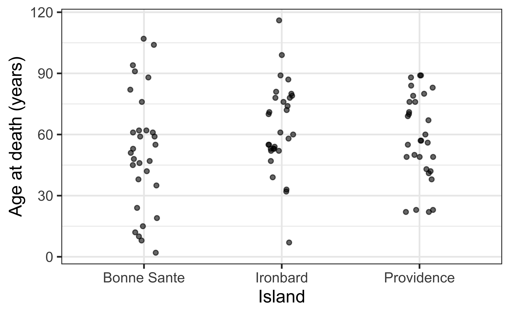
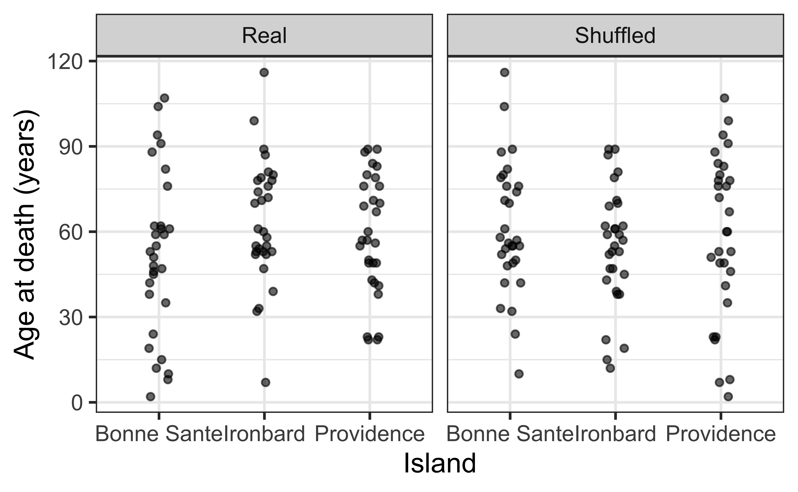
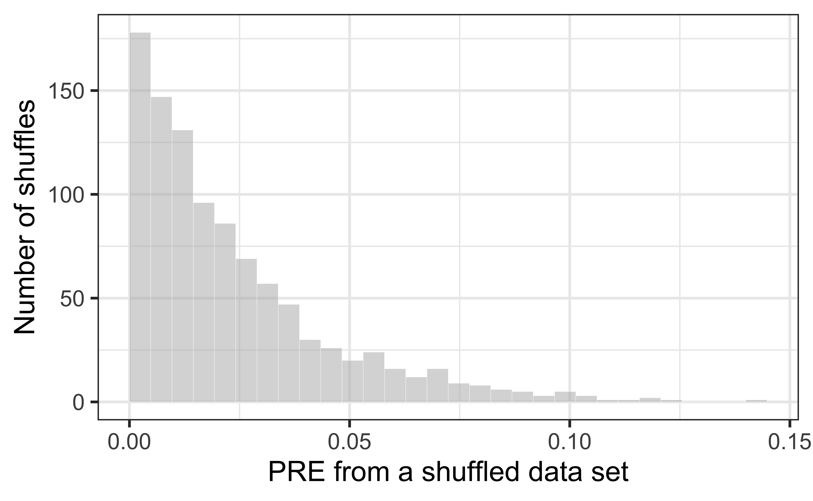
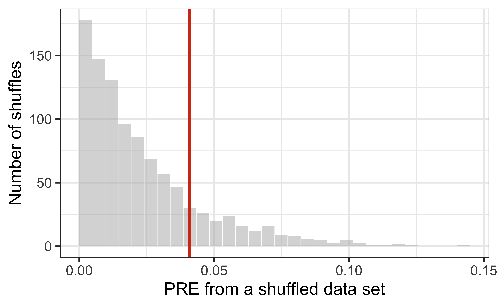

Introduction to Inference
Does sex (or island) explain more variation than chance?
Prof. Eric Friedlander
Last time
- We collected our stratified cluster sample of the Islands: each of us drew 10 islanders from an assigned village.
- We thought about who is (and isn’t) in our sample, and why that biases our estimate of life expectancy.
Today: explore the pooled class data, then ask: is the difference we see between men and women real, or could it just be chance?
Topics
- Load the pooled class data
- Explore life expectancy overall and by sex or island.
- Ask whether sex or island explains more variation than we’d expect by chance, and answer it by shuffling.
- Build a null distribution and compute a p-value.
- Name what shuffling can, and cannot, tell us.
Activity
Complete Exercises 1-3.
If you finish early complete Exercise 4.
Exploring life expectancy
Our pooled data
| student_name | island | village | villager_name | sex | birth_year | death_year | age_at_death |
|---|---|---|---|---|---|---|---|
| Sawyer | Providence | Takazaki | Helsa Lund | Female | 326 | 375 | 49 |
| Sawyer | Providence | Takazaki | Nerina Burke | Male | 299 | 375 | 76 |
| Sawyer | Providence | Takazaki | Ayann Bahadur | Male | 291 | 375 | 84 |
| Sawyer | Providence | Takazaki | Ulrich Wolff | Male | 286 | 375 | 89 |
| Sawyer | Providence | Takazaki | Emile Pallesen | Male | 308 | 375 | 67 |
What are the observational units? What are the variables, and which is the response?
Exploring age at death
You’ll be using sex as your response and I’m going to use island.

- Does it look like there is a relationship between
islandandage_at_death? - What about
sexandage_at_death?
Our model
| term | estimate | std.error | statistic | p.value |
|---|---|---|---|---|
| (Intercept) | 51.86667 | 4.399044 | 11.790442 | 0.0000000 |
| islandIronbard | 11.93333 | 6.221187 | 1.918176 | 0.0583686 |
| islandProvidence | 6.70000 | 6.221187 | 1.076965 | 0.2844732 |
\[ \widehat{\text{age at death}} = 51.87 + 11.93 \times \text{islandIronbard} + 6.7\times \text{islandProvidence} \]
What is the reference level? What do the slopes mean here?
Does island explain more variation than chance?
How much does island explain?
In Lesson 7 we called this PRE (or \(R^2\)): the proportion of variation in age at death that the model explains.
In our sample, island explains 4.1% of the variation in age at death. Is that a lot? What would you compare it to?
A useful model or a useless one?
Remember, \(SST = SSM + SSE\), and \(PRE = SSM / SST\).
Suppose we add a predictor to the empty model, and the predictor is pure noise. Could \(SSE\) get bigger than it was for the empty model? What is the smallest \(PRE\) can ever be?
- Least squares can always fall back on “ignore the predictor,” so \(SSE\) can’t go up and \(PRE \geq 0\).
- In practice, even a useless predictor picks up a little bit of the noise, so \(PRE\) is (almost) always a little bigger than 0.
So “PRE is bigger than 0” can’t be our evidence because we’ll always get a PRE bigger than 0. So how big is big enough?
Reframing the question
Does island explain MORE variation in age at death than we’d expect if there were no relationship at all?
To answer this, we need to know what PRE looks like in a world where there is no relationship between island and age at death.
In a world where there was no relationship between sex and age at death:
- In that world, what would the boxplots for men and women look like?
- If I told you an islander’s sex, would it help you guess their age at death?
- Then what does it matter which age at death goes with which sex label?
Activity: Shuffling villagers
🃏 Cards! Each of you gets one villager
Your card has two halves: sex | age at death.
- Sit on the Female or Male side of the room, based on the sex half of your card.
- Round 0: Let’s go around and report our results, and I’ll add them to a spreadsheet.
- I collect every age at death half, shuffle them, and deal them back out.
- Round 1: Everyone stays put and I’ll enter what you’re currently holding.
- Repeat for a few more rounds.
Before we shuffle
Make a prediction, and talk to your neighbor:
- After I shuffle, will the average age at death of the women in the room change? What about the men?
- Will the difference between the two group averages get bigger, get smaller, or stay the same?
- Will PRE be exactly 0?
What did the shuffle do?
(We look at the class’s data in R.)
- What did shuffling keep the same? (Think: the set of ages, the group sizes, SST.)
- What did shuffling break?
- Which round(s) came from a world where sex has nothing to do with age at death?
- Even though we made sex irrelevant, PRE is not exactly 0. Why not?
If I shuffled again, would I get the same PRE? How would you describe the pattern across many shuffles?
Shuffling in R
shuffle() does what I did with the cards: it randomly reorders age_at_death, leaving island alone.
[1] 0.01332503[1] 0.003968431[1] 0.01541159Same data, same code, three different answers. Where did the randomness come from?
Real vs. shuffled

Which panel represents a world with no relationship? Which one do we actually live in?
Shuffling 1000 times
Before I run this: if I shuffle and compute PRE 1000 times, and make a histogram, what shape will it have? Where will most of the values be? Can any be negative?
The null distribution

Each bar is built from shuffles where island and age at death are unrelated. What does one value in this histogram represent?
Naming what we built
This histogram is the sampling distribution of PRE under the null hypothesis, or the null distribution.
- Null hypothesis \(H_0\): there is no relationship between island and age at death (\(\beta_1 = 0\) and \(\beta_2 = 0\)). Any PRE we see is just chance.
- Alternative hypothesis \(H_A\): there is a relationship (\(\beta_1 \neq 0\) OR \(\beta_2 \neq 0\)).
The shuffles show us how much variation islands would “explain” by chance alone. That is what we needed to judge whether 4.1% is a lot.
Where does our data land?

The red line is the PRE from our real data. Is it an unusual value in a world with no relationship? How would you put a number on “unusual”?
The p-value
About 17.3% of the shuffled data sets explained at least as much variation as our real data did.
This is the p-value: the probability of getting a PRE at least as large as ours if there were no relationship.
- Why do we count only the shuffles that are bigger than ours, and not the ones that are smaller?
- If the p-value were tiny, what would we conclude? If it were large?
What would change the answer?
- Our card deck had about 20 villagers. Our pooled data have 90. Would the null distribution be wider or narrower with only 20? What would that do to how convincing a given PRE is?
- If sex or island mattered a lot on the Island, where would the red line sit?
- Suppose the p-value is tiny. Does that fix the survivorship bias we discussed earlier?
Shuffling accounts for chance. It does not account for bias in how we collected the data, and it doesn’t tell us about cause.
Back to the AE
Complete Exercises 5-7: shuffle the data yourself and decide whether sex explains more variation than chance would.
Recap
- Hand-entered data need cleaning before we can trust them: check spelling, duplicates, missing values, and impossible values.
- PRE is never negative, so “PRE > 0” is not evidence. The real question is whether island or sex explains more variation than we’d expect if there were no relationship.
- Shuffling the response breaks any relationship, so repeated shuffles build the null distribution: what PRE looks like by chance alone.
- The p-value is the proportion of shuffles that did at least as well as our real data.
- Shuffling accounts for chance, not for bias in how we collected our sample, and it doesn’t tell us about cause.
- Next time: turning this idea into a formal hypothesis test.